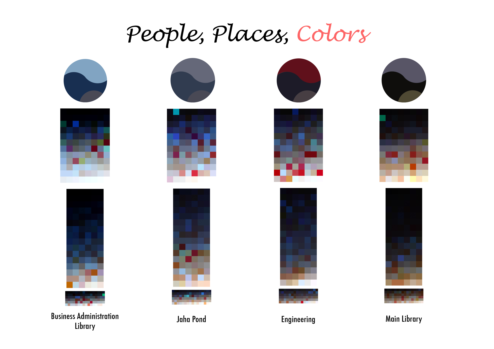
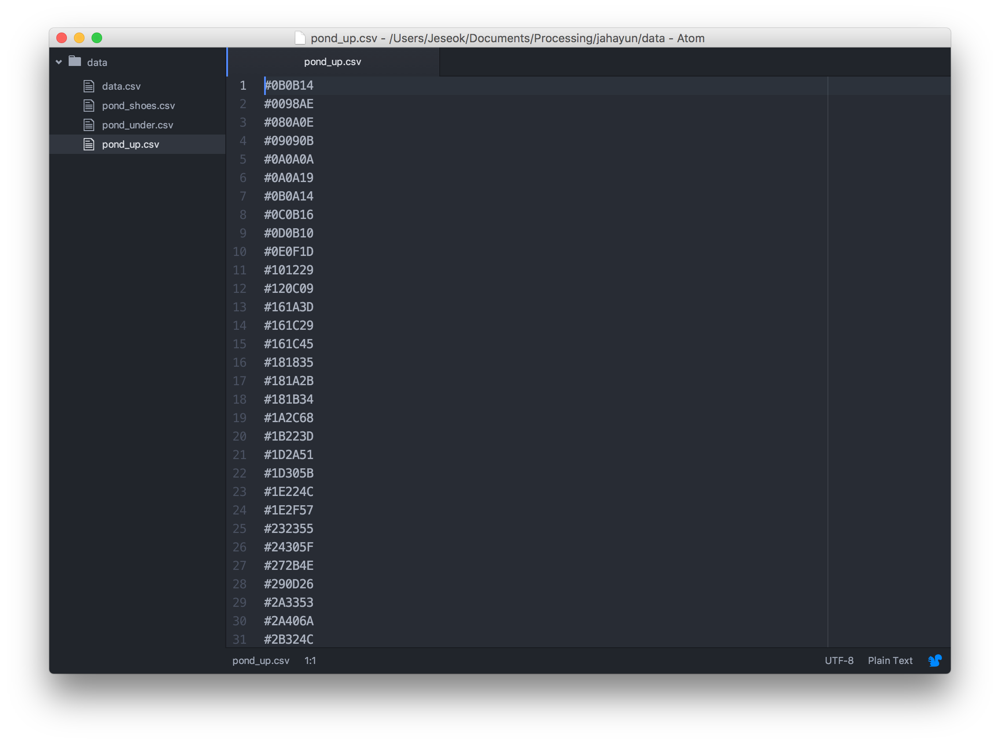
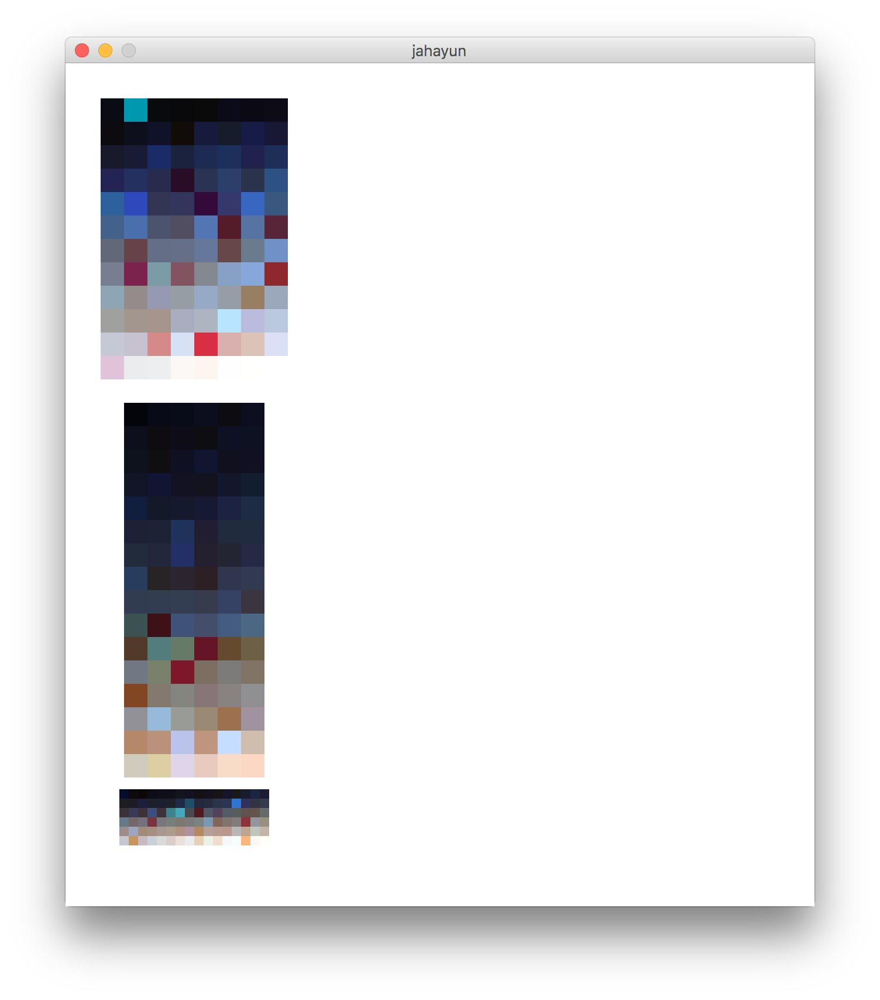

Casual Data Visualization
People, Place, and Color
Course Assignment
Copyright is held by the owner/author(s).
SNU 2014 Spring Semester, Information Visualization
Introduction
This project started from the thought that I want to visualize color in different places
in the campus of Seoul National University. We selected 4 different spots that we assumed
to have distinctive color depending on different major and gender distribution.

People, Place, and Color
Created by Jeseok Lee. Data was collected by the team.
Visualization: Processing, Graphic: Adobe Photoshop.
Data Collection
4 members of the team recorded a video at 4 designated places around the campus.
And then we did color-picking on people's top, down, and shoes. Hexcode of color
were sorted with a csv file.

CSV file of Hexcodes
Visualization with Processing
With Processing, I arranged and visualized the color gathered from the video.
I sorted RGB Hexcode by ascending order, which puts darker colors on top and bright colors
at the bottom.
Here's PDE code of visualization in Jaha pond part.
void setup(){
size(640,720);
background(255);
}
void draw(){
String csvstr1[] = loadStrings("pond_up.csv"); //load csv
int csvnum1[] = new int[96]; //make "new array" csvnum
String csvstr2[] = loadStrings("pond_under.csv"); //load csv
int csvnum2[] = new int[96]; //make "new array" csvnum
String csvstr3[] = loadStrings("pond_shoes.csv"); //load csv
int csvnum3[] = new int[96]; //make "new array" csvnum
int x=30;
int y=30;
int k=0;
for(int j=0; j<12; j=j+1){
for(int i=0; i<8; i=i+1){
String str1 = csvstr1[8*j+i];
String num1 = str1.substring(1); //change string to number
String numb1 = "FF"+num1;
color c1 = unhex(numb1);
csvnum1[k] = c1; //save color to "new array
fill(csvnum1[k]); //load color from "new array"
noStroke();
rect(x,y,20,20);
x+=20;
}
x=30;
y+=20;
}
x=50;
y=290;
for(int j=0; j<16; j=j+1){
for(int i=0; i<6; i=i+1){
String str2 = csvstr2[6*j+i];
String num2 = str2.substring(1); //change string to number
String numb2 = "FF"+num2;
color c2 = unhex(numb2);
csvnum2[k] = c2; //save color to "new array
fill(csvnum2[k]); //load color from "new array"
noStroke();
rect(x,y,20,20);
x+=20;
}
x=50;
y+=20;
}
x=46;
y=620;
for(int j=0; j<6; j=j+1){
for(int i=0; i<16; i=i+1){
String str3 = csvstr3[16*j+i];
String num3 = str3.substring(1); //change string to number
String numb3 = "FF"+num3;
color c3 = unhex(numb3);
csvnum3[k] = c3; //save color to "new array
fill(csvnum3[k]); //load color from "new array"
noStroke();
rect(x,y,140/16,140/16);
x+=140/16;
println(c3);
}
x=46;
y+=140/16;
}
noLoop();
}
Above code generates this picture. Each place's person consists of combination of
top, down, and shoes colors.

Final Result
After going through 4 different places, we could get different image from each place.
I finalized this output with Adobe Photoshop, generating this piece.